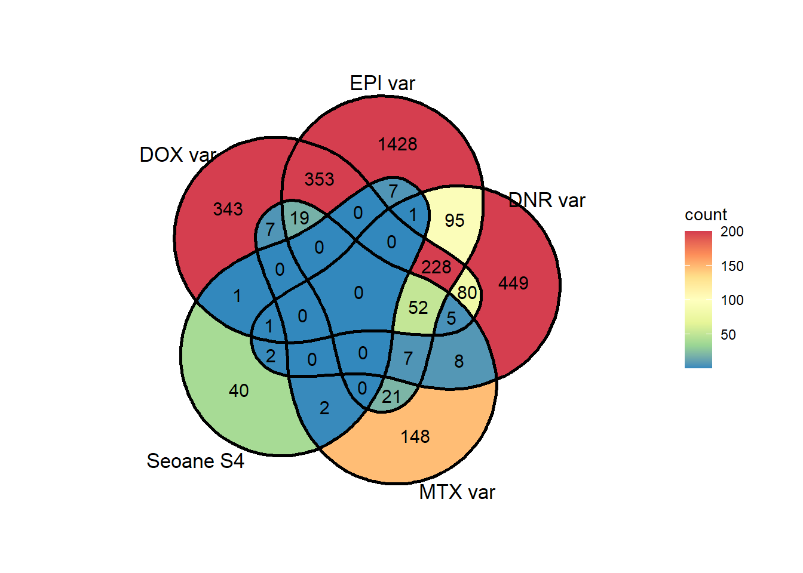

Highly variable genes
ERM
2024-02-05
Last updated: 2024-02-05
Checks: 7 0
Knit directory: Cardiotoxicity/
This reproducible R Markdown analysis was created with workflowr (version 1.7.1). The Checks tab describes the reproducibility checks that were applied when the results were created. The Past versions tab lists the development history.
Great! Since the R Markdown file has been committed to the Git repository, you know the exact version of the code that produced these results.
Great job! The global environment was empty. Objects defined in the global environment can affect the analysis in your R Markdown file in unknown ways. For reproduciblity it’s best to always run the code in an empty environment.
The command set.seed(20230109) was run prior to running
the code in the R Markdown file. Setting a seed ensures that any results
that rely on randomness, e.g. subsampling or permutations, are
reproducible.
Great job! Recording the operating system, R version, and package versions is critical for reproducibility.
Nice! There were no cached chunks for this analysis, so you can be confident that you successfully produced the results during this run.
Great job! Using relative paths to the files within your workflowr project makes it easier to run your code on other machines.
Great! You are using Git for version control. Tracking code development and connecting the code version to the results is critical for reproducibility.
The results in this page were generated with repository version df08393. See the Past versions tab to see a history of the changes made to the R Markdown and HTML files.
Note that you need to be careful to ensure that all relevant files for
the analysis have been committed to Git prior to generating the results
(you can use wflow_publish or
wflow_git_commit). workflowr only checks the R Markdown
file, but you know if there are other scripts or data files that it
depends on. Below is the status of the Git repository when the results
were generated:
Ignored files:
Ignored: .RData
Ignored: .Rhistory
Ignored: .Rproj.user/
Ignored: analysis/variance_values by gene.png
Ignored: data/41588_2018_171_MOESM3_ESMeQTL_ST2_for paper.csv
Ignored: data/Arr_GWAS.txt
Ignored: data/Arr_geneset.RDS
Ignored: data/BC_cell_lines.csv
Ignored: data/BurridgeDOXTOX.RDS
Ignored: data/CADGWASgene_table.csv
Ignored: data/CAD_geneset.RDS
Ignored: data/CALIMA_Data/
Ignored: data/CMD04_75DRCviability.csv
Ignored: data/CMD04_87DRCviability.csv
Ignored: data/CMD05_75DRCviability.csv
Ignored: data/CMD05_87DRCviability.csv
Ignored: data/Clamp_Summary.csv
Ignored: data/Cormotif_24_k1-5_raw.RDS
Ignored: data/Counts_RNA_ERMatthews.txt
Ignored: data/DAgostres24.RDS
Ignored: data/DAtable1.csv
Ignored: data/DDEMresp_list.csv
Ignored: data/DDE_reQTL.txt
Ignored: data/DDEresp_list.csv
Ignored: data/DEG-GO/
Ignored: data/DEG_cormotif.RDS
Ignored: data/DF_Plate_Peak.csv
Ignored: data/DRC48hoursdata.csv
Ignored: data/Da24counts.txt
Ignored: data/Dx24counts.txt
Ignored: data/Dx_reQTL_specific.txt
Ignored: data/EPIstorelist24.RDS
Ignored: data/Ep24counts.txt
Ignored: data/FC_necela.RDS
Ignored: data/FC_necela_names.RDS
Ignored: data/Full_LD_rep.csv
Ignored: data/GOIsig.csv
Ignored: data/GOplots.R
Ignored: data/GTEX_setsimple.csv
Ignored: data/GTEX_sig24.RDS
Ignored: data/GTEx_gene_list.csv
Ignored: data/HFGWASgene_table.csv
Ignored: data/HF_geneset.RDS
Ignored: data/Heart_Left_Ventricle.v8.egenes.txt
Ignored: data/Heatmap_mat.RDS
Ignored: data/Heatmap_sig.RDS
Ignored: data/Hf_GWAS.txt
Ignored: data/K_cluster
Ignored: data/K_cluster_kisthree.csv
Ignored: data/K_cluster_kistwo.csv
Ignored: data/Knowles_log2cpm_real.RDS
Ignored: data/Knowles_variation_data.RDS
Ignored: data/Knowles_variation_data_conc.RDS
Ignored: data/Knowlesvarlist.RDS
Ignored: data/LD50_05via.csv
Ignored: data/LDH48hoursdata.csv
Ignored: data/Mt24counts.txt
Ignored: data/NoRespDEG_final.csv
Ignored: data/RINsamplelist.txt
Ignored: data/RNA_seq_trial.RDS
Ignored: data/Schneider_GWAS.txt
Ignored: data/Seonane2019supp1.txt
Ignored: data/Sup_replicate_values.csv
Ignored: data/TMMnormed_x.RDS
Ignored: data/TOP2Bi-24hoursGO_analysis.csv
Ignored: data/TR24counts.txt
Ignored: data/TableS10.csv
Ignored: data/TableS11.csv
Ignored: data/TableS9.csv
Ignored: data/Top2_expression.RDS
Ignored: data/Top2biresp_cluster24h.csv
Ignored: data/Var_test_list.RDS
Ignored: data/Var_test_list24.RDS
Ignored: data/Var_test_list24alt.RDS
Ignored: data/Var_test_list3.RDS
Ignored: data/Vargenes.RDS
Ignored: data/Viabilitylistfull.csv
Ignored: data/allexpressedgenes.txt
Ignored: data/allfinal3hour.RDS
Ignored: data/allgenes.txt
Ignored: data/allmatrix.RDS
Ignored: data/allmymatrix.RDS
Ignored: data/annotation_data_frame.RDS
Ignored: data/averageviabilitytable.RDS
Ignored: data/averageviabilitytable.csv
Ignored: data/avgLD50.RDS
Ignored: data/avg_LD50.RDS
Ignored: data/avg_via_table.csv
Ignored: data/backGL.txt
Ignored: data/burr_genes.RDS
Ignored: data/calcium_data.RDS
Ignored: data/clamp_summary.RDS
Ignored: data/cormotif_3hk1-8.RDS
Ignored: data/cormotif_initalK5.RDS
Ignored: data/cormotif_initialK5.RDS
Ignored: data/cormotif_initialall.RDS
Ignored: data/cormotifprobs.csv
Ignored: data/counts24hours.RDS
Ignored: data/cpmcount.RDS
Ignored: data/cpmnorm_counts.csv
Ignored: data/crispr_genes.csv
Ignored: data/ctnnt_results.txt
Ignored: data/cvd_GWAS.txt
Ignored: data/dat_cpm.RDS
Ignored: data/data_outline.txt
Ignored: data/drug_noveh1.csv
Ignored: data/efit2.RDS
Ignored: data/efit2_final.RDS
Ignored: data/efit2results.RDS
Ignored: data/ensembl_backup.RDS
Ignored: data/ensgtotal.txt
Ignored: data/filcpm_counts.RDS
Ignored: data/filenameonly.txt
Ignored: data/filtered_cpm_counts.csv
Ignored: data/filtered_raw_counts.csv
Ignored: data/filtermatrix_x.RDS
Ignored: data/folder_05top/
Ignored: data/framefun24.RDS
Ignored: data/geneDoxonlyQTL.csv
Ignored: data/gene_corr_df.RDS
Ignored: data/gene_corr_frame.RDS
Ignored: data/gene_prob_tran3h.RDS
Ignored: data/gene_probabilityk5.RDS
Ignored: data/geneset_24.RDS
Ignored: data/gostresTop2bi_ER.RDS
Ignored: data/gostresTop2bi_LR
Ignored: data/gostresTop2bi_LR.RDS
Ignored: data/gostresTop2bi_TI.RDS
Ignored: data/gostrescoNR
Ignored: data/gtex/
Ignored: data/heartgenes.csv
Ignored: data/highly_var_genelist.RDS
Ignored: data/hsa_kegg_anno.RDS
Ignored: data/individualDRCfile.RDS
Ignored: data/individual_DRC48.RDS
Ignored: data/individual_LDH48.RDS
Ignored: data/indv_noveh1.csv
Ignored: data/kegglistDEG.RDS
Ignored: data/kegglistDEG24.RDS
Ignored: data/kegglistDEG3.RDS
Ignored: data/knowfig4.csv
Ignored: data/knowfig5.csv
Ignored: data/label_list.RDS
Ignored: data/ld50_table.csv
Ignored: data/mean_vardrug1.csv
Ignored: data/mean_varframe.csv
Ignored: data/mymatrix.RDS
Ignored: data/new_ld50avg.RDS
Ignored: data/nonresponse_cluster24h.csv
Ignored: data/norm_LDH.csv
Ignored: data/norm_counts.csv
Ignored: data/old_sets/
Ignored: data/organized_drugframe.csv
Ignored: data/pca_all_anno.csv
Ignored: data/plan2plot.png
Ignored: data/plot_intv_list.RDS
Ignored: data/plot_list_DRC.RDS
Ignored: data/qval24hr.RDS
Ignored: data/qval3hr.RDS
Ignored: data/qvalueEPItemp.RDS
Ignored: data/raw_counts.csv
Ignored: data/response_cluster24h.csv
Ignored: data/sampsettrz.RDS
Ignored: data/schneider_closest_output.RDS
Ignored: data/sigVDA24.txt
Ignored: data/sigVDA3.txt
Ignored: data/sigVDX24.txt
Ignored: data/sigVDX3.txt
Ignored: data/sigVEP24.txt
Ignored: data/sigVEP3.txt
Ignored: data/sigVMT24.txt
Ignored: data/sigVMT3.txt
Ignored: data/sigVTR24.txt
Ignored: data/sigVTR3.txt
Ignored: data/siglist.RDS
Ignored: data/siglist_final.RDS
Ignored: data/siglist_old.RDS
Ignored: data/slope_table.csv
Ignored: data/supp10_24hlist.RDS
Ignored: data/supp10_3hlist.RDS
Ignored: data/supp_normLDH48.RDS
Ignored: data/supp_pca_all_anno.RDS
Ignored: data/supp_viadata.csv
Ignored: data/table3a.omar
Ignored: data/test_run_sample_list.txt
Ignored: data/testlist.txt
Ignored: data/toplistall.RDS
Ignored: data/trtonly_24h_genes.RDS
Ignored: data/trtonly_3h_genes.RDS
Ignored: data/tvl24hour.txt
Ignored: data/tvl24hourw.txt
Ignored: data/venn_code.R
Ignored: data/viability.RDS
Untracked files:
Untracked: .RDataTmp
Untracked: .RDataTmp1
Untracked: .RDataTmp2
Untracked: .RDataTmp3
Untracked: 3hr all.pdf
Untracked: Code_files_list.csv
Untracked: Data_files_list.csv
Untracked: Doxorubicin_vehicle_3_24.csv
Untracked: Doxtoplist.csv
Untracked: EPIqvalue_analysis.Rmd
Untracked: Final.sup.pdf
Untracked: GWAS_list_of_interest.xlsx
Untracked: KEGGpathwaylist.R
Untracked: NA
Untracked: OmicNavigator_learn.R
Untracked: SNP_egenes_allfiles.RDS
Untracked: SNP_frame_pdf
Untracked: SNP_frame_pdf.pdf
Untracked: SigDoxtoplist.csv
Untracked: analysis/DRC_viability_check.Rmd
Untracked: analysis/New_code_dec-23.R
Untracked: analysis/cellcycle_kegg_genes.R
Untracked: analysis/ciFIT.R
Untracked: analysis/export_to_excel.R
Untracked: analysis/featureCountsPLAY.R
Untracked: cleanupfiles_script.R
Untracked: code/biomart_gene_names.R
Untracked: code/constantcode.R
Untracked: code/corMotifcustom.R
Untracked: code/cpm_boxplot.R
Untracked: code/extracting_ggplot_data.R
Untracked: code/movingfilesto_ppl.R
Untracked: code/pearson_extract_func.R
Untracked: code/pearson_tox_extract.R
Untracked: code/plot1C.fun.R
Untracked: code/spearman_extract_func.R
Untracked: code/venndiagramcolor_control.R
Untracked: cormotif_p.post.list_4.csv
Untracked: figS1024h.pdf
Untracked: final.pdf
Untracked: individual-legenddark2.png
Untracked: installed_old.rda
Untracked: listoftranscripts
Untracked: motif_ER.txt
Untracked: motif_LR.txt
Untracked: motif_NR.txt
Untracked: motif_TI.txt
Untracked: output/ABHD8_dif_values.RDS
Untracked: output/C3orf18_dif_values.RDS
Untracked: output/Cardiotox_dif_values.RDS
Untracked: output/DNR_DEGlist.csv
Untracked: output/DNRvenn.RDS
Untracked: output/DOX_DEGlist.csv
Untracked: output/DOX_de_goi.csv
Untracked: output/DOXvenn.RDS
Untracked: output/EEF1B2_dif_values.RDS
Untracked: output/EEIG1_dif_values.RDS
Untracked: output/EPI_DEGlist.csv
Untracked: output/EPIvenn.RDS
Untracked: output/ESGN_rds.RDS
Untracked: output/FC_necela.RDS
Untracked: output/FC_necela_names.RDS
Untracked: output/FRS2_dif_values.RDS
Untracked: output/Figures/
Untracked: output/GTEXv8_gene_median_tpm.RDS
Untracked: output/GTEXv8_gene_tpm_heart_left_ventricle.RDS
Untracked: output/HDDC2_dif_values.RDS
Untracked: output/HER2_gene.RDS
Untracked: output/KEGGcellcyclegenes.RDS
Untracked: output/Knowles_S13.csv
Untracked: output/Knowles_log2cpm.csv
Untracked: output/Knowles_supp13.csv
Untracked: output/LD50tox_table.RDS
Untracked: output/MTX_DEGlist.csv
Untracked: output/MTXvenn.RDS
Untracked: output/PEX16_dif_values.RDS
Untracked: output/RASIP1_dif_values.RDS
Untracked: output/RMI1_dif_values.RDS
Untracked: output/RSID_QTL_list_full.txt
Untracked: output/SETA_analysis_reyes.RDS
Untracked: output/SGWAS_top50_order.csv
Untracked: output/SLC27A1_dif_values.RDS
Untracked: output/SLC28A3_dif_values.RDS
Untracked: output/SNP_egenes_allfiles.RDS
Untracked: output/SNP_list_ID.RDS
Untracked: output/SNP_list_full.txt
Untracked: output/SNP_supp.RDS
Untracked: output/TGFBR3L_dif_values.RDS
Untracked: output/TNS2_dif_values.RDS
Untracked: output/TOP_50SNPreffile.csv
Untracked: output/TRZ_DEGlist.csv
Untracked: output/TableS8.csv
Untracked: output/Volcanoplot_10
Untracked: output/Volcanoplot_10.RDS
Untracked: output/ZNF740_dif_values.RDS
Untracked: output/allfinal_sup10.RDS
Untracked: output/counts_v8_heart_left_ventricle_gct.RDS
Untracked: output/crisprfoldchange.RDS
Untracked: output/endocytosisgenes.csv
Untracked: output/expre7k.csv
Untracked: output/expressed_egenes_by_RSID.csv
Untracked: output/gene_corr_fig9.RDS
Untracked: output/genes.RDS
Untracked: output/legend_b.RDS
Untracked: output/motif_ERrep.RDS
Untracked: output/motif_LRrep.RDS
Untracked: output/motif_NRrep.RDS
Untracked: output/motif_TI_rep.RDS
Untracked: output/near_genes_SNP1.RDS
Untracked: output/necela_list_test.RDS
Untracked: output/necela_val_genes.RDS
Untracked: output/output-old/
Untracked: output/rank24genes.csv
Untracked: output/rank3genes.csv
Untracked: output/sequencinginformationforsupp.csv
Untracked: output/sequencinginformationforsupp.prn
Untracked: output/sigVDA24.txt
Untracked: output/sigVDA3.txt
Untracked: output/sigVDX24.txt
Untracked: output/sigVDX3.txt
Untracked: output/sigVEP24.txt
Untracked: output/sigVEP3.txt
Untracked: output/sigVMT24.txt
Untracked: output/sigVMT3.txt
Untracked: output/sigVTR24.txt
Untracked: output/sigVTR3.txt
Untracked: output/supplementary_motif_list_GO.RDS
Untracked: output/test_biomart_run.RDS
Untracked: output/toptablebydrug.RDS
Untracked: output/trop_knowles_fun.csv
Untracked: output/tvl24hour.txt
Untracked: output/x_counts.RDS
Untracked: reneebasecode.R
Unstaged changes:
Modified: analysis/DRC_analysis.Rmd
Modified: analysis/GOI_plots.Rmd
Modified: analysis/GTEx_genes.Rmd
Deleted: analysis/Knowles2019.Rmd
Modified: output/daplot.RDS
Modified: output/dxplot.RDS
Modified: output/epplot.RDS
Modified: output/mtplot.RDS
Modified: output/plan2plot.png
Modified: output/trplot.RDS
Modified: output/veplot.RDS
Note that any generated files, e.g. HTML, png, CSS, etc., are not included in this status report because it is ok for generated content to have uncommitted changes.
These are the previous versions of the repository in which changes were
made to the R Markdown (analysis/Var_genes.Rmd) and HTML
(docs/Var_genes.html) files. If you’ve configured a remote
Git repository (see ?wflow_git_remote), click on the
hyperlinks in the table below to view the files as they were in that
past version.
| File | Version | Author | Date | Message |
|---|---|---|---|---|
| Rmd | df08393 | reneeisnowhere | 2024-02-05 | updates to scripts |
| Rmd | 62286c3 | reneeisnowhere | 2023-07-28 | Updateing figure code |
| Rmd | 06800c9 | reneeisnowhere | 2023-07-26 | Commits to small changes and edits |
| html | ee8be4c | reneeisnowhere | 2023-07-21 | Build site. |
| Rmd | b94104b | reneeisnowhere | 2023-07-21 | first plot update |
Goals for this page:
I will examine the AC-shared variable genes within AC-shared response genes
library(tidyverse)
library(VennDiagram)
library(paletteer)
library(ggVennDiagram)
library(gridtext)
library(scales)
library(kableExtra)
library(ComplexHeatmap)
library(data.table)
# library(tidyverse)
library(ggpubr)
library(ggsignif)
# library(paletteer)
# library(ggVennDiagram)
# library(gridtext)
# library(scales)
# library(kableExtra)
library(qvalue)
# library(data.table)
# library(ComplexHeatmap)drug_palc <- c("#8B006D","#DF707E","#F1B72B", "#3386DD","#707031","#41B333")
Vargenes <- readRDS("data/geneset_24.RDS")
expressedgenes <- read.csv("data/backGL.txt")
venn24part <- VennDiagram::get.venn.partitions(Vargenes)
backGL <- read.csv("data/backGL.txt", row.names = 1)
toplistall <- readRDS("data/toplistall.RDS")
#get sig files made with 0.05 data this way(data created on run)
siglist <- readRDS("data/siglist_final.RDS")
siglist24 <- siglist[6:9]
test <- siglist24[1]["ENTREZID"]
sig_24_ENTREZID <- sapply(siglist24,"[[",1)
sig_24_venn<- VennDiagram::get.venn.partitions(sig_24_ENTREZID)AC shared
AC_share_var <- venn24part$..values..[[25]] #203
not_AC_shared <- setdiff(expressedgenes$ENTREZID,AC_share_var)
AC_shared_sig <- sig_24_venn$..values..[[9]] ##4435
length(intersect(AC_share_var,AC_shared_sig)) #(88 overlap)[1] 88length(intersect(not_AC_shared,AC_shared_sig)) #4347[1] 4347#
# stored <-
expressedgenes %>%
mutate(var_AC= if_else(ENTREZID %in% AC_share_var, "y","no")) %>%
mutate(not_AC=if_else(ENTREZID %in% not_AC_shared,"y","no")) %>%
mutate(AC_shared_sig=if_else(ENTREZID %in% AC_shared_sig,"y","no")) %>%
# group_by(AC_shared_sig,not_AC) %>%
summarise("var_share-n" = sum(not_AC=="no"&AC_shared_sig=="no"), "var_share-y"=sum(not_AC=="no"&AC_shared_sig=="y"),"not_var-n"=sum(not_AC=="y"&AC_shared_sig=="no"), "not_var-y"=sum(not_AC=="y"&AC_shared_sig=="y")) %>%
pivot_longer(everything(), names_to = "set", values_to = "count") %>%
separate(set, into = c("set", "color"),sep="-" ) %>%
mutate(color, factor(color, levels = c("y","no"))) %>%
mutate(set=case_match(set,"not_var"~"not AC shared\nvar. gene","var_share"~"AC shared\nvar. gene")) %>%
ggplot( ., aes(x=set, y=count, group=color,fill=color))+
geom_col(position='fill')+
theme_classic()+
scale_color_manual(values=drug_palc)+
scale_fill_manual(values=c("y"="cornflowerblue","n"="darkblue"),
labels=c("not an AC-sp gene","shared with\nAC sp"))+
scale_y_continuous(expand=expansion(0.001))+
theme(strip.text=element_text(size=10, face = "bold"),
axis.text.x = element_text(margin = margin(2,0,2,0, "pt"), size=12),
strip.background = element_rect (linetype=1, linewidth = 0.5))
| Version | Author | Date |
|---|---|---|
| ee8be4c | reneeisnowhere | 2023-07-21 |
testmat <- matrix(c(88,4347,115,9534),nrow = 2,byrow = TRUE)
chisq.test(testmat)#$p.value
Pearson's Chi-squared test with Yates' continuity correction
data: testmat
X-squared = 12.877, df = 1, p-value = 0.0003326Top2i shared
TOP2i_share_var <- venn24part$..values..[[17]] # 32
not_T2_shared <- setdiff(expressedgenes$ENTREZID,TOP2i_share_var)#14052
TOP2i_shared_sig <- sig_24_venn$..values..[[1]] ##882
length(intersect(TOP2i_share_var,TOP2i_shared_sig)) #(3 overlap)[1] 3length(intersect(not_T2_shared,TOP2i_shared_sig)) #879[1] 879# stored <-
expressedgenes %>%
mutate(var_t2= if_else(ENTREZID %in% TOP2i_share_var, "y","no")) %>%
mutate(not_t2= if_else(ENTREZID %in% not_T2_shared,"y","no")) %>%
mutate(T2_shared_sig=if_else(ENTREZID %in% TOP2i_shared_sig,"y","no")) %>%
# group_by(AC_shared_sig,not_t2) %>%
summarise("var_share-n" = sum(not_t2=="no"&T2_shared_sig=="no"), "var_share-y"=sum(not_t2=="no"&T2_shared_sig=="y"),"not_var-n"=sum(not_t2=="y"&T2_shared_sig=="no"), "not_var-y"=sum(not_t2=="y"&T2_shared_sig=="y"))%>%
pivot_longer(everything(), names_to = "set", values_to = "count") %>%
separate(set, into = c("set", "color"),sep="-" ) %>%
mutate(color, factor(color, levels = c("y","no"))) %>%
mutate(set=case_match(set,"not_var"~"not TOP2i shared\nvar. gene","var_share"~"TOP2i shared\nvar. gene")) %>%
ggplot( ., aes(x=set, y=count, group=color,fill=color))+
geom_col(position='fill')+
theme_classic()+
xlab(" ")+
ggtitle("TOP2i variable genes in TOP2i specific n= 4435")+
scale_color_manual(values=drug_palc)+
scale_fill_manual(values=c("y"="cornflowerblue","n"="darkblue"),
labels=c("not a TOP2i-sp gene","shared with\nTOP2i-sp"))+
scale_y_continuous(expand=expansion(0.001))+
theme(strip.text=element_text(size=10, face = "bold"),
axis.text.x = element_text(margin = margin(2,0,2,0, "pt"), size=12),
strip.background = element_rect (linetype=1, linewidth = 0.5))
| Version | Author | Date |
|---|---|---|
| ee8be4c | reneeisnowhere | 2023-07-21 |
testmatTOP <- matrix(c(3,879,29,13173),nrow = 2,byrow = TRUE)
chisq.test(testmatTOP)#$p.value
Pearson's Chi-squared test with Yates' continuity correction
data: testmatTOP
X-squared = 0.13128, df = 1, p-value = 0.7171GO heatmaps
DOX_var24gost <- readRDS("data/DEG-GO/var/DOX_var24gost.RDS")
DOX_table <- DOX_var24gost$result %>%
dplyr::select(c(source, term_id, term_name,intersection_size, term_size, p_value))
EPI_var24gost <- readRDS("data/DEG-GO/var/EPI_var24gost.RDS")
EPI_table <- EPI_var24gost$result %>%
dplyr::select(c(source, term_id, term_name,intersection_size, term_size, p_value))
DNR_var24gost <- readRDS("data/DEG-GO/var/DNR_var24gost.RDS")
DNR_table <- DNR_var24gost$result %>%
dplyr::select(c(source, term_id, term_name,intersection_size, term_size, p_value))
MTX_var24gost <- readRDS("data/DEG-GO/var/MTX_var24gost.RDS")
MTX_table <- MTX_var24gost$result %>%
dplyr::select(c(source, term_id, term_name,intersection_size, term_size, p_value))
TRZ_var24gost <- readRDS("data/DEG-GO/var/TRZ_var24gost.RDS")
TRZ_table <- TRZ_var24gost$result %>%
dplyr::select(c(source, term_id, term_name,intersection_size, term_size, p_value))
AC_share_var24gost <- readRDS("data/DEG-GO/var/AC_share_var24gost.RDS")
AC_share_var24_table <- AC_share_var24gost$result %>%
dplyr::select(c(source, term_id, term_name,intersection_size, term_size, p_value))
TOP2i_var24gost <- readRDS("data/DEG-GO/var/TOP2i_var24gost.RDS")
TOP2i_var24_table <- TOP2i_var24gost$result %>%
dplyr::select(c(source, term_id, term_name,intersection_size, term_size, p_value))
terms <- list()
terms[1] <- DOX_table %>% dplyr::filter(source=="GO:BP") %>% slice_min(.,p_value, n=3) %>% list()
terms[2] <- EPI_table %>% dplyr::filter(source=="GO:BP") %>%slice_min(.,p_value, n=3) %>% list()
terms[3] <- DNR_table %>% dplyr::filter(source=="GO:BP") %>%slice_min(.,p_value, n=3) %>% list()
terms[4] <- MTX_table %>% dplyr::filter(source=="GO:BP") %>%slice_min(.,p_value, n=3) %>% list()
terms[5] <- TRZ_table %>% dplyr::filter(source=="GO:BP") %>%slice_min(.,p_value, n=3) %>% list()
terms[6] <- AC_share_var24_table %>% dplyr::filter(source=="GO:BP") %>%slice_min(.,p_value, n=3) %>% list()
terms[7] <- TOP2i_var24_table %>% dplyr::filter(source=="GO:BP") %>%slice_min(.,p_value, n=3) %>% list()
names(terms) <- c("DOX", "EPI","DNR", "MTX", "TRZ", "AC_shared", "TOP2i_shared")
termlist <- rbindlist(terms)
termlistid <- c("GO:0010867","GO:0043508","GO:0070932")P_valueterm <- list()
P_valueterm[1] <- DOX_table %>% dplyr::filter(term_id %in% termlistid) %>% list()
P_valueterm[2] <- EPI_table %>% dplyr::filter(term_id %in% termlistid) %>% list()
P_valueterm[3] <- DNR_table %>% dplyr::filter(term_id %in% termlistid) %>% list()
P_valueterm[4] <- MTX_table %>% dplyr::filter(term_id %in% termlistid) %>% list()
P_valueterm[5] <- TRZ_table %>% dplyr::filter(term_id %in% termlistid) %>% list()
P_valueterm[6] <- AC_share_var24_table %>% dplyr::filter(term_id %in% termlistid) %>% list()
P_valueterm[7] <- TOP2i_var24_table %>% dplyr::filter(term_id %in% termlistid) %>% list()
names(P_valueterm) <- c("DOX", "EPI","DNR", "MTX", "TRZ", "AC_shared", "TOP2i_shared")
GO_heatmapdata <- rbindlist(P_valueterm,idcol= "deg")
col_funkegg= circlize::colorRamp2(c(0, 5), c("white", "darkred"))
GO_sig_mat <- GO_heatmapdata %>%
dplyr::select(deg,p_value,term_name) %>%
# mutate(term_name= case_match(term_name,"Cell cycle"~"Cell\ncycle","p53 signaling pathway"~"p53\nsig.\npath.","Base excision repair"~"Base\nexcision\nrepair",
# "DNA replication"~"DNA\nrep.",.default = term_name)) %>%
pivot_wider(id_cols = everything(),
names_from="term_name",
values_from="p_value",
values_fill = list(p_value = 1)) %>%
column_to_rownames('deg') %>%
as.matrix()#
GO_mat<- GO_heatmapdata%>%
mutate(log_val= (-log10(p_value))) %>%
dplyr::select(deg,log_val,term_name) %>%
mutate(term_name= case_match(term_name,"histone H3 deacetylation"~"histone H3\n deacetylation","negative regulation of JUN kinase activity
"~"neg. reg. of\nJUN kinase\nactivity","positive regulation of triglyceride biosynthetic process"~"pos. reg.\nof triglyceride\nbiosynthetic\nprocess",.default = term_name)) %>%
pivot_wider(id_cols = everything(),
names_from="term_name",values_from="log_val") %>%
column_to_rownames('deg') %>%
as.matrix()#
Heatmap(GO_mat,
column_title = "GO -log10 p values",
name = "-log10 (p value)",
cluster_rows = FALSE,
cluster_columns = FALSE,
column_names_rot = 0,
column_dend_side = "bottom",
column_names_max_height = unit(12,"cm"),
column_names_centered = TRUE,
row_names_max_width = max_text_width(
rownames(GO_mat),
gp = gpar(fontsize = 10)),
col = col_funkegg,
na_col="lightyellow",
column_labels = paste0(c("histone H3\n deacetylation",
"neg. reg. of\nJUN kinase\nactivity",
"pos. reg.of\ntriglyceride\nbiosynthetic\nprocess")),
cell_fun = function(j, i, x, y, width, height, fill) {
if(GO_sig_mat[i, j]< 0.05)
grid.text("*", x, y, gp = gpar(fontsize = 20))
})
| Version | Author | Date |
|---|---|---|
| ee8be4c | reneeisnowhere | 2023-07-21 |
Seoane data investigation of variability
I will examine the Seoane gene sets and overlap with variable data
list2env(Vargenes, envir = .GlobalEnv)<environment: R_GlobalEnv>chrom_reg_Seoane <- read_csv(file = "data/Seonane2019supp1.txt",col_types = cols(...1 = col_skip()))
Seoane_2019 <- chrom_reg_Seoane[,2]
names(Seoane_2019) <- "ENTREZID"
Sup1seoane <- (unique(Seoane_2019$ENTREZID))
Sup4genes <- read.csv("output/Sup4seoane.csv", row.names = 1)
Sup4seoane <- Sup4genes %>%
dplyr::filter(pval.expAnth<0.05) %>%
distinct(entrez, .keep_all = TRUE) %>%
dplyr::select(entrez) %>%
rename("ENTREZID"='entrez')intersect(Sup1seoane,AC_share_var)[1] "387893" "79723" "86" "1105" "8473" "3012" #
intersect(Sup4seoane$ENTREZID,as.numeric(AC_share_var))numeric(0)intersect(Sup4seoane$ENTREZID,as.numeric(not_AC_shared)) [1] 11176 10284 8819 23522 7786 2146 4297 79913 8242 51780 6872 23135
[13] 6877 23030 64324 79885 10847 51773 5253 9126 3054 9734 53335 27350
[25] 6601 1108 8289 890 64151 10445 7150 8110 54531 51409 27097 9739
[37] 6595 9555 22823 54556 10592 7528 9031 51377 7799 6602 8202 51564
[49] 79858 10856# Vargenes[[length(Vargenes)+1]] <- list(Sup4seoane$ENTREZID)
library(paletteer)
assignInNamespace(x="plot_venn", value=plot_venn, ns="ggVennDiagram")
sup1overlap <- list(as.numeric(DOX_24_var),as.numeric(EPI_24_var),as.numeric(DNR_24_var),as.numeric(MTX_24_var), Sup1seoane)
# re_incommon <- c(DOXreQTLs$ENTREZID,sigVDA24$ENTREZID, sigVEP24$ENTREZID, sigVMT24$ENTREZID)
#
# names(reQTL_overlapDE24) <- c("Dox_reQTLS", "DNR DEGs","EPI DEGs","MTX DEGs")
ggVennDiagram::ggVennDiagram(sup1overlap,
category.names = c("DOX var",
"EPI var",
"DNR var",
"MTX var",
"Seoane S1"),
show_intersect = FALSE,
set_color = "black",
# category_size = c(6,6,6,6),
label = "count",
# color = c("DOX\negenes" = "yellow","DNR DEGs" ="steelblue","EPI DEGs" = 'red', "MTX DEGs" = 'black') ,
label_percent_digit = 1,
label_size = 4,
label_alpha = 0,
label_color = "black",
edge_lty = "solid", set_size = 4.5)+
scale_x_continuous(expand = expansion(mult = .3))+
scale_y_continuous(expand = expansion(mult = .2))+
# scale_color_paletteer_d(palette = "fishualize::Bodianus_pulchellus")+
# scale_colour_gradientn(colours = cols,
# values = rescale(c(0, 20, 75, 1000, 5000)),
# guide = "colorbar", limits=c(0, 100)) +
scale_fill_distiller(palette="Spectral", direction = -1, limits= c(1,200),oob=scales::squish)#+
# scale_fill_manual(values = cbp1)+
labs(title = "24 hour DOX egenes in other DEG sets")+
theme(plot.title = element_text(size = rel(1.6), hjust = 0.5, vjust =1))NULLsup4overlap <- list(as.numeric(DOX_24_var),as.numeric(EPI_24_var),as.numeric(DNR_24_var),as.numeric(MTX_24_var), as.numeric(Sup4seoane$ENTREZID))
ggVennDiagram::ggVennDiagram(sup4overlap,
category.names = c("DOX var",
"EPI var",
"DNR var",
"MTX var",
"Seoane S4"),
show_intersect = FALSE,
set_color = "black",
# category_size = c(6,6,6,6),
label = "count",
# color = c("DOX\negenes" = "yellow","DNR DEGs" ="steelblue","EPI DEGs" = 'red', "MTX DEGs" = 'black') ,
label_percent_digit = 1,
label_size = 4,
label_alpha = 0,
label_color = "black",
edge_lty = "solid", set_size = 4.5)+
scale_x_continuous(expand = expansion(mult = .3))+
scale_y_continuous(expand = expansion(mult = .2))+
# scale_color_paletteer_d(palette = "fishualize::Bodianus_pulchellus")+
# scale_colour_gradientn(colours = cols,
# values = rescale(c(0, 20, 75, 1000, 5000)),
# guide = "colorbar", limits=c(0, 100)) +
scale_fill_distiller(palette="Spectral", direction = -1, limits= c(1,200),oob=scales::squish)#+
# scale_fill_manual(values = cbp1)+
labs(title = "24 hour DOX egenes in other DEG sets")+
theme(plot.title = element_text(size = rel(1.6), hjust = 0.5, vjust =1))NULLDEG <- Vargenes
siglist24 <- siglist[6:9]
test <- siglist24[1]["ENTREZID"]
sig_24_ENTREZID <- sapply(siglist24,"[[",1)
all_unique_DEG <- unique(rbindlist(lapply(sig_24_ENTREZID, as.data.table))) ##8188
all_unique_var <- unique(rbindlist((lapply(Vargenes, as.data.table))))
length(intersect(all_unique_DEG$V1,all_unique_var$V1))##2190[1] 2190DEG_var <- intersect(all_unique_DEG$V1,all_unique_var$V1)
non_DEG_var <- setdiff(expressedgenes$ENTREZID,DEG_var)
ggVennDiagram::ggVennDiagram(list(all_unique_var$V1, all_unique_DEG$V1),
category.names = c("all var genes", "all DEGs"),
show_intersect = FALSE,
set_color = "black",
label = "count",
label_percent_digit = 1,
label_size = 4,
label_alpha = 0,
label_color = "black",
edge_lty = "solid", set_size = 4.5)+
scale_x_continuous(expand = expansion(mult = .3))+
scale_y_continuous(expand = expansion(mult = .2))+
# scale_color_paletteer_d(palette = "fishualize::Bodianus_pulchellus")+
# scale_colour_gradientn(colours = cols,
# values = rescale(c(0, 20, 75, 1000, 5000)),
# guide = "colorbar", limits=c(0, 100)) +
scale_fill_distiller(palette="Spectral", direction = -1, limits= c(1000,8000),oob=scales::squish)#+
holdlist <- list(DEG_var, as.numeric(non_DEG_var), Sup1seoane)
ggVennDiagram::ggVennDiagram(list( as.numeric(DEG_var), as.numeric(non_DEG_var), Sup1seoane),
category.names = c("DEG var", "non DEG var","Seoane supp 1"),
show_intersect = FALSE,
set_color = "black",
label = "count",
label_percent_digit = 1,
label_size = 4,
label_alpha = 0,
label_color = "black",
edge_lty = "solid", set_size = 4.5)+
scale_x_continuous(expand = expansion(mult = .3))+
scale_y_continuous(expand = expansion(mult = .2))+
# scale_color_paletteer_d(palette = "fishualize::Bodianus_pulchellus")+
# scale_colour_gradientn(colours = cols,
# values = rescale(c(0, 20, 75, 1000, 5000)),
# guide = "colorbar", limits=c(0, 100)) +
scale_fill_distiller(palette="Spectral", direction = -1, limits= c(1000,8000),oob=scales::squish)#+
testS1 <- matrix(c(59,271,2131,11623),nrow = 2,byrow = TRUE)
chisq.test(testS1)
Pearson's Chi-squared test with Yates' continuity correction
data: testS1
X-squared = 1.2204, df = 1, p-value = 0.2693Burridge data
DOXreQTLs <- readRDS("output/DOXreQTLs.RDS")
burr_genes <- readRDS("data/BurridgeDOXTOX.RDS")
# BurridgeDOXTOX <- getBM(attributes=my_attributes,filters ='hgnc_symbol',
# values = burr_genes, mart = ensembl)
# BurridgeDOXTOX <- BurridgeDOXTOX %>% distinct(entrezgene_id, .keep_all = TRUE)
# saveRDS(BurridgeDOXTOX, "data/BurridgeDOXTOX.RDS")
storeEPI <- readRDS("data/qvalueEPItemp.RDS")
VennDiagram::get.venn.partitions(list(storeEPI$ENTREZID, DOXreQTLs$ENTREZID)) X1 X2 ..set.. ..values.. ..count..
1 TRUE TRUE X1∩X2 5119, 93.... 4
2 FALSE TRUE (X2)∖(X1) 29965, 2.... 138
3 TRUE FALSE (X1)∖(X2) 49856, 2.... 504intersect(DOXreQTLs$ENTREZID, burr_genes$entrezgene_id)character(0)# DOX_reqtls <-$ENTREZID %>% as.integer()
DOXreQTLs %>% dplyr::filter(ENTREZID %in% storeEPI$ENTREZID) %>% tally( ) n
1 4 burr_genes %>%
dplyr::filter(entrezgene_id%in% backGL$ENTREZID) %>%
dplyr::filter(entrezgene_id %in% storeEPI$ENTREZID)[1] entrezgene_id ensembl_gene_id hgnc_symbol
<0 rows> (or 0-length row.names)### now for burr genes and epi508
VennDiagram::get.venn.partitions(list(storeEPI$ENTREZID, burr_genes$entrezgene_id)) X1 X2 ..set.. ..values.. ..count..
1 TRUE TRUE X1∩X2 0
2 FALSE TRUE (X2)∖(X1) 220, 790.... 22
3 TRUE FALSE (X1)∖(X2) 49856, 2.... 508### looking at the overlap of egenes and EPI 508 var
storeEPI %>%
dplyr::filter (ENTREZID %in% DOXreQTLs$ENTREZID) %>%
left_join(., backGL, by=c("ENTREZID")) ENTREZID EPI.VEH.24 qvalues SYMBOL ensembl_gene_id hgnc_symbol
1 5119 0.001617342 0.07437143 CHMP1A ENSG00000131165 CHMP1A
2 93134 0.002341605 0.08331969 ZNF561 ENSG00000171469 ZNF561
3 132001 0.002319133 0.08331969 TAMM41 ENSG00000279643 TAMM41
4 10592 0.003429113 0.08968566 SMC2 ENSG00000136824 SMC2looking at heatmaps
mean_vardrug1 <- read.csv("data/mean_vardrug1.csv", row.names = 1)
drug_frame <- mean_vardrug1 %>%
rownames_to_column(var = "entrezid") %>%
pivot_longer(cols = mean.Da.3:var.Ve.24,
names_to = "short",
values_to = "values") %>%
separate(short, into = c("calc", "treatment", "time")) %>%
# mutate(treatment = factor(
# treatment,
# levels = c("Do", "Ep", "Da", "Mi", "Tr", "Ve"),
# labels = c("DOX", "EPI", "DNR", "MTX", "TRZ", "VEH")
# )) %>%
# mutate(time = factor(
# time,
# levels = c("3", "24"),
# labels = c("3 hours", "24 hours")
# )) %>%
# group_by(treatment, time, calc) %>%
as.data.framev_DNR_24 <- drug_frame %>%
dplyr::filter(calc !="mean", treatment =="Da", time=="24") %>%
select(entrezid,values)%>%
rename("DNR"="values")
v_DOX_24 <- drug_frame %>%
dplyr::filter(calc !="mean", treatment =="Do", time=="24") %>%
select(entrezid,values)%>%
rename("DOX"="values")
v_EPI_24 <- drug_frame %>%
dplyr::filter(calc !="mean", treatment =="Ep", time=="24") %>%
select(entrezid,values)%>%
rename("EPI"="values")
v_MTX_24 <- drug_frame %>%
dplyr::filter(calc !="mean", treatment =="Mi", time=="24") %>%
select(entrezid,values)%>%
rename("MTX"="values")
v_TRZ_24 <- drug_frame %>%
dplyr::filter(calc !="mean", treatment =="Tr", time=="24") %>%
select(entrezid,values)%>%
rename("TRZ"="values")
v_VEH_24 <- drug_frame %>%
dplyr::filter(calc !="mean", treatment =="Ve", time=="24") %>%
select(entrezid,values)%>%
rename("VEH"="values")
val_mat_24 <- left_join(v_DNR_24,v_DOX_24,
by=c("entrezid"))%>%
left_join(.,v_EPI_24, by=c("entrezid")) %>%
left_join(.,v_MTX_24, by=c("entrezid")) %>%
left_join(.,v_TRZ_24, by=c("entrezid")) %>%
left_join(.,v_VEH_24, by=c("entrezid")) %>%
column_to_rownames("entrezid") %>%
as.matrix
summary(val_mat_24) DNR DOX EPI MTX
Min. : 0.000902 Min. : 0.00139 Min. : 0.001492 Min. : 0.000579
1st Qu.: 0.057038 1st Qu.: 0.07892 1st Qu.: 0.124501 1st Qu.: 0.045321
Median : 0.117373 Median : 0.16358 Median : 0.266216 Median : 0.095530
Mean : 0.249433 Mean : 0.32816 Mean : 0.488970 Mean : 0.235354
3rd Qu.: 0.252505 3rd Qu.: 0.35258 3rd Qu.: 0.571324 3rd Qu.: 0.230010
Max. :28.118788 Max. :33.54419 Max. :26.410869 Max. :27.443180
TRZ VEH
Min. : 0.00076 Min. : 0.00057
1st Qu.: 0.04751 1st Qu.: 0.05105
Median : 0.10385 Median : 0.11627
Mean : 0.27199 Mean : 0.30214
3rd Qu.: 0.24733 3rd Qu.: 0.28361
Max. :32.76541 Max. :30.87884 col_fun = circlize::colorRamp2(c(0, 0.4, 2), c("#377EB8", "white", "#E41A1C"))
Heatmap(val_mat_24, col=col_fun,
show_row_names = FALSE,
# width = unit(5, "mm"),
cluster_columns = FALSE)
sessionInfo()R version 4.3.1 (2023-06-16 ucrt)
Platform: x86_64-w64-mingw32/x64 (64-bit)
Running under: Windows 10 x64 (build 19045)
Matrix products: default
locale:
[1] LC_COLLATE=English_United States.utf8
[2] LC_CTYPE=English_United States.utf8
[3] LC_MONETARY=English_United States.utf8
[4] LC_NUMERIC=C
[5] LC_TIME=English_United States.utf8
time zone: America/Chicago
tzcode source: internal
attached base packages:
[1] grid stats graphics grDevices utils datasets methods
[8] base
other attached packages:
[1] qvalue_2.32.0 ggsignif_0.6.4 ggpubr_0.6.0
[4] data.table_1.14.8 ComplexHeatmap_2.16.0 kableExtra_1.3.4
[7] scales_1.3.0 gridtext_0.1.5 ggVennDiagram_1.5.0
[10] paletteer_1.6.0 VennDiagram_1.7.3 futile.logger_1.4.3
[13] lubridate_1.9.3 forcats_1.0.0 stringr_1.5.0
[16] dplyr_1.1.3 purrr_1.0.2 readr_2.1.4
[19] tidyr_1.3.0 tibble_3.2.1 ggplot2_3.4.4
[22] tidyverse_2.0.0 workflowr_1.7.1
loaded via a namespace (and not attached):
[1] formatR_1.14 rematch2_2.1.2 rlang_1.1.2
[4] magrittr_2.0.3 clue_0.3-65 GetoptLong_1.0.5
[7] git2r_0.32.0 matrixStats_1.1.0 compiler_4.3.1
[10] getPass_0.2-2 png_0.1-8 systemfonts_1.0.5
[13] callr_3.7.3 vctrs_0.6.4 reshape2_1.4.4
[16] rvest_1.0.3 pkgconfig_2.0.3 shape_1.4.6
[19] crayon_1.5.2 fastmap_1.1.1 magick_2.8.1
[22] backports_1.4.1 labeling_0.4.3 utf8_1.2.4
[25] promises_1.2.1 rmarkdown_2.25 tzdb_0.4.0
[28] ps_1.7.5 bit_4.0.5 xfun_0.41
[31] cachem_1.0.8 jsonlite_1.8.7 highr_0.10
[34] later_1.3.1 broom_1.0.5 parallel_4.3.1
[37] cluster_2.1.4 R6_2.5.1 bslib_0.6.1
[40] stringi_1.7.12 RColorBrewer_1.1-3 car_3.1-2
[43] jquerylib_0.1.4 Rcpp_1.0.11 iterators_1.0.14
[46] knitr_1.45 IRanges_2.34.1 splines_4.3.1
[49] httpuv_1.6.12 timechange_0.2.0 tidyselect_1.2.0
[52] rstudioapi_0.15.0 abind_1.4-5 yaml_2.3.7
[55] doParallel_1.0.17 codetools_0.2-19 processx_3.8.2
[58] plyr_1.8.9 withr_3.0.0 evaluate_0.23
[61] lambda.r_1.2.4 xml2_1.3.5 circlize_0.4.15
[64] pillar_1.9.0 carData_3.0-5 whisker_0.4.1
[67] foreach_1.5.2 stats4_4.3.1 generics_0.1.3
[70] vroom_1.6.5 rprojroot_2.0.4 S4Vectors_0.38.2
[73] hms_1.1.3 munsell_0.5.0 glue_1.6.2
[76] tools_4.3.1 webshot_0.5.5 fs_1.6.3
[79] colorspace_2.1-0 cli_3.6.1 futile.options_1.0.1
[82] fansi_1.0.5 viridisLite_0.4.2 svglite_2.1.2
[85] gtable_0.3.4 rstatix_0.7.2 sass_0.4.7
[88] digest_0.6.33 BiocGenerics_0.46.0 farver_2.1.1
[91] rjson_0.2.21 htmltools_0.5.7 lifecycle_1.0.4
[94] httr_1.4.7 GlobalOptions_0.1.2 bit64_4.0.5